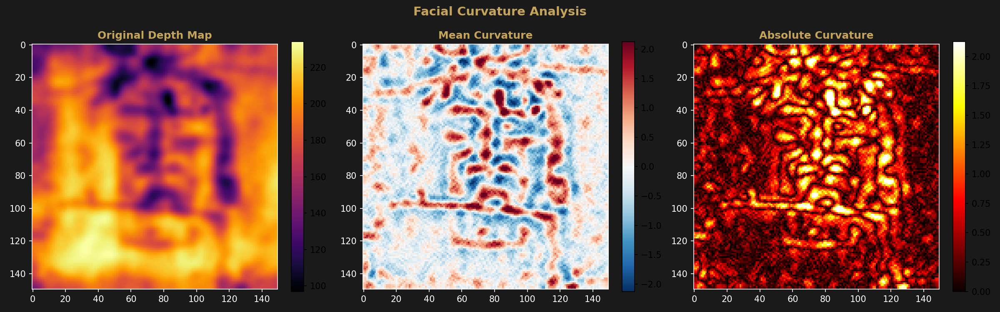
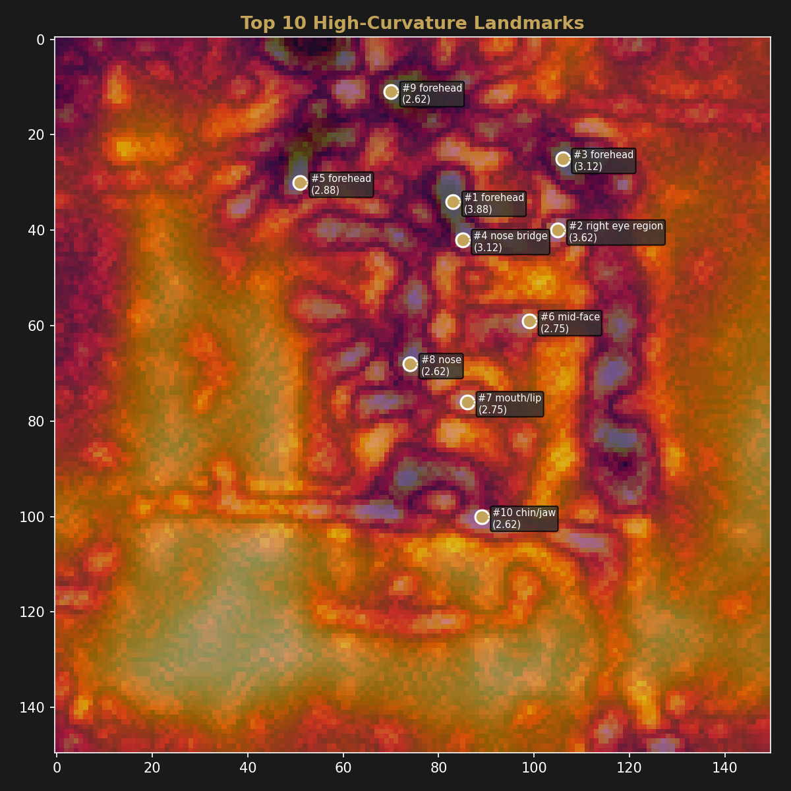

Extended Analysis
Facial Curvature Analysis
Second-derivative curvature of the depth map identifies sharp anatomical features and flat regions, providing a resolution-independent characterization of the encoded facial geometry.
Method
Mean curvature was computed from the 150×150 Enrie depth map by applying
numpy.gradient twice — first to obtain the depth gradient
(dz/dx, dz/dy), then again to obtain the second derivatives (d²z/dx²,
d²z/dy²). Mean curvature H = (d²z/dx² + d²z/dy²) / 2
was used as the curvature proxy. High absolute curvature indicates sharp surface
transitions (ridges, edges), while low curvature indicates flat areas.
Curvature Statistics
| Metric | Value |
|---|---|
| Mean curvature (average) | −0.0006 |
| Mean curvature (std dev) | 0.7292 |
| Absolute curvature (average) | 0.5452 |
| Absolute curvature (max) | 3.875 |
| Absolute curvature (99th percentile) | 2.125 |
The near-zero mean curvature (−0.0006) confirms the face surface has no systematic convexity or concavity bias. The standard deviation of 0.73 indicates moderate surface variation, with the top 1% of curvature values exceeding 2.125.
Curvature Heatmap

High-Curvature Landmarks
The top 10 highest-curvature points, identified with spatial separation of at least 8 pixels to avoid clustering:
| Rank | Region | Curvature | Position (x, y) |
|---|---|---|---|
| 1 | Forehead | 3.875 | (83, 34) |
| 2 | Right eye region | 3.625 | (105, 40) |
| 3 | Forehead | 3.125 | (106, 25) |
| 4 | Nose bridge | 3.125 | (85, 42) |
| 5 | Forehead | 2.875 | (51, 30) |
| 6 | Mid-face | 2.750 | (99, 59) |
| 7 | Mouth/lip | 2.750 | (86, 76) |
| 8 | Nose | 2.625 | (74, 68) |
| 9 | Forehead | 2.625 | (70, 11) |
| 10 | Chin/jaw | 2.625 | (89, 100) |

Interpretation
The distribution of high-curvature points maps to expected craniometric features: the brow ridge (forehead, ranks 1, 3, 5, 9), the orbital margin (right eye, rank 2), the nasal bridge and tip (ranks 4, 8), the lip border (rank 7), and the chin prominence (rank 10). These are the locations where any human face has the steepest surface transitions.
Four of the top 10 points cluster in the forehead/brow region, consistent with the supraorbital ridge being one of the most prominent features in a depth-encoded facial representation. The nose bridge (rank 4) and nose tip (rank 8) represent the midline ridge where curvature changes direction between the two sides of the face.